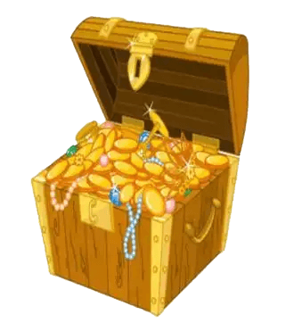

Introducing the SpryMap
The javascript map script so fast and lightweight that it'll knock your knickers off. Give it a try - click and drag the map below.

Note: All credit for creating this wonder of a map image goes to
Rob Lazzaretti
.